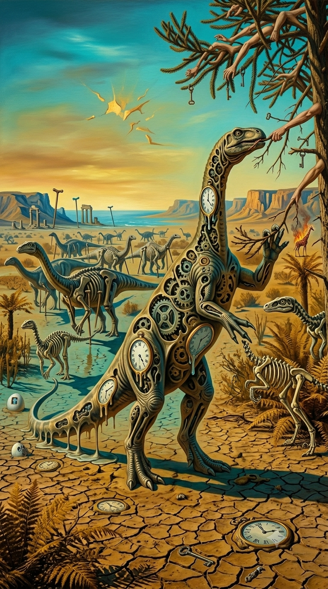
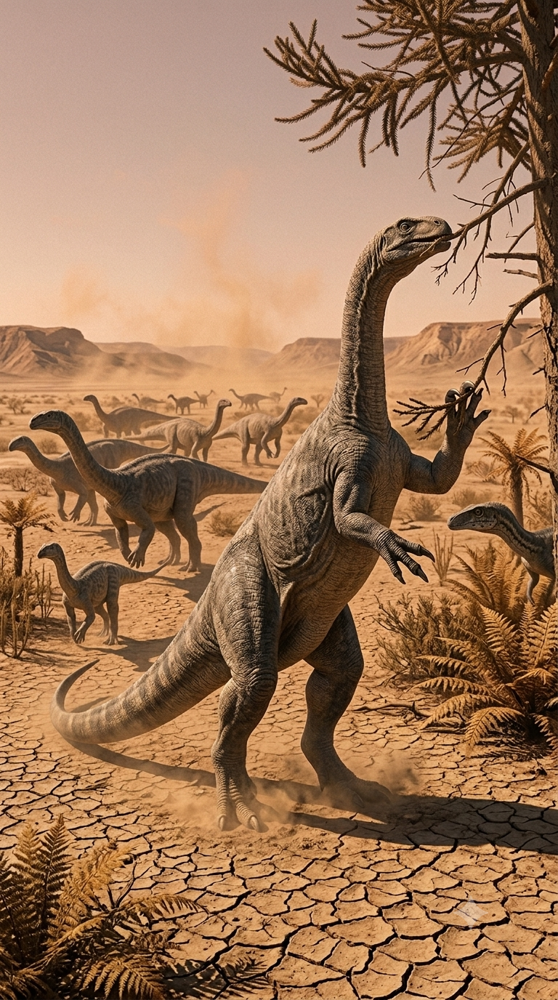

Paleoficha de PalEntropía


TAXÓN:
Plateosaurus trossingensis
CLADO:
Plateosauria (Plateosauridae, Sauropodomorpha)
DIETA:
Herbívoro (consumidor primario de vegetación media y alta, complementada con fermentación intestinal)
TAMAÑO:
Entre 6 y 10 metros de longitud y una masa estimada de 600 a 1.500 kg, aunque algunos individuos excepcionales pudieron superar las 2 toneladas.
LOCOMOCIÓN:
Facultativamente bípedo o cuadrúpedo; extremidades posteriores alargadas y manos provistas de un gran pulgar con garra para manipulación y defensa.
TIEMPO:
Triásico Superior (Noriense–Rhaetiense), aproximadamente hace 214–204 millones de años.
GEOGRAFÍA:
Europa Central y Occidental (Alemania, Francia, Suiza y Groenlandia).
EQUIVALENCIA PALEOGEOGRÁFICA:
Llanuras aluviales semiáridas, cuencas fluviales estacionales y abanicos aluviales.
AMBIENTE PALEAOECOLÓGICO:
Ecosistemas terrestres abiertos con bosques dispersos, ríos estacionales y vegetación ribereña.
ECOLOGÍA:
• Flora: Coníferas primitivas, ginkgos, helechos arborescentes y equisetos.
• Fauna secundaria: Fitosaurios, rauisuquios, cinodontes avanzados y pequeños dinosaurios terópodos.
• Nichos: Gran ramoneador terrestre. Su cuello alargado y su dentición en forma de hoja permitían aprovechar vegetación situada a distintas alturas, mientras que sus fuertes miembros posteriores le proporcionaban una locomoción eficiente para desplazarse entre zonas de alimentación.
• Relaciones: Plateosáurido basal. Representa la primera gran radiación de dinosaurios herbívoros de gran tamaño y constituye uno de los principales precursores evolutivos de los gigantes saurópodos del Jurásico.
CLIMA:
Wm21 (Triásico cálido con regímenes monzónicos estacionales). Temperaturas elevadas y marcada alternancia entre estaciones húmedas y secas, favoreciendo ecosistemas fluviales y bosques abiertos.
ESTADO ECOLÓGICO:
Extinto. Principal gran herbívoro de los ecosistemas europeos del Triásico Superior y uno de los primeros dinosaurios en alcanzar gran tamaño corporal, anticipando el éxito evolutivo de los saurópodos del Jurásico.